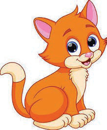

Chapter One
Simple investigations in the environment
I know the environment around me

There is an orange coloured cat sitting and looking forward directing attention as it introduces the next learning activityThe environment includes everything that surround us.
Activity 1
Walk around the school compound and observe the things found there.
Question one: What did you observe?
Question two: What things are found in the environment around your home?